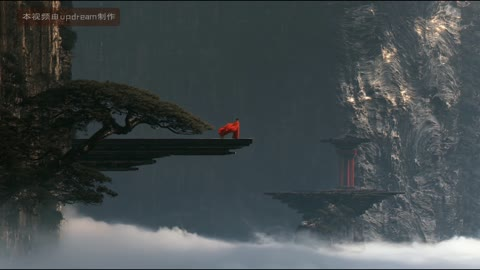
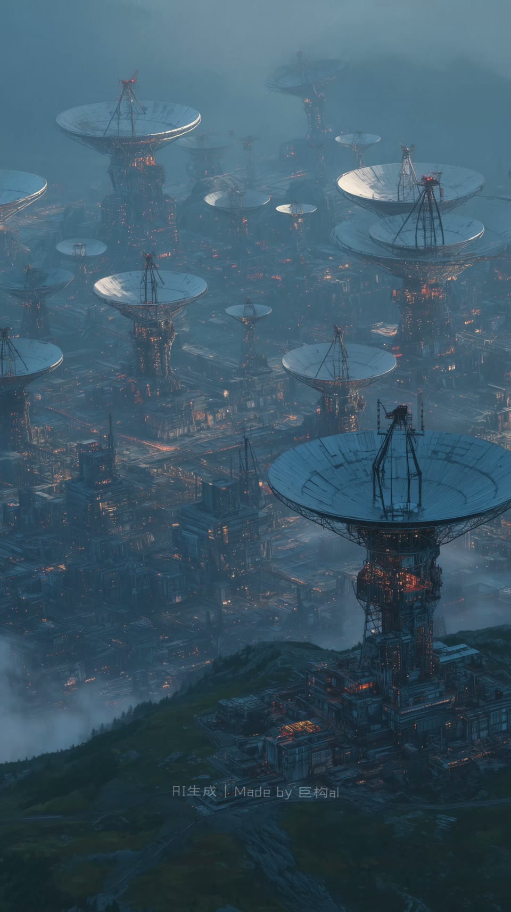
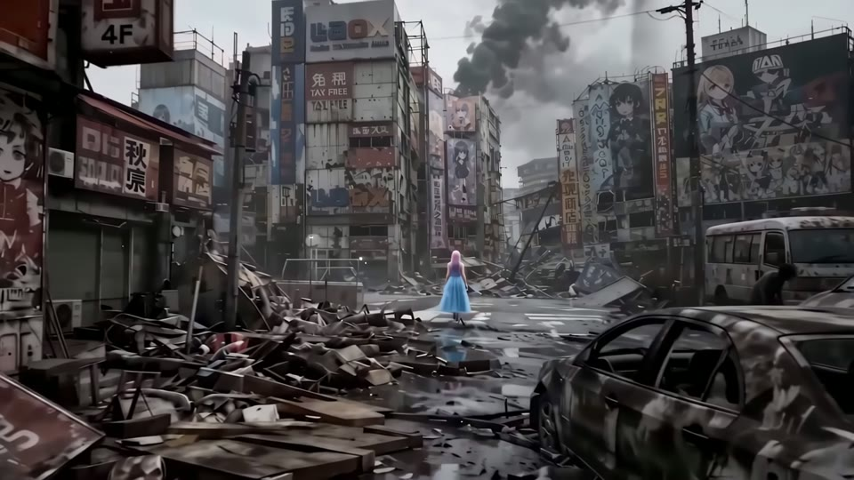

AI28 / 0—5.4秒
巨构：玄同无待〖AI全民制作人〗
极小人物面对巨大圆门和长柱列，暖色门缘对冷灰环境；2.867转白色瀑布墙，人物仍作为比例参照。
迁移提问：画面里有什么告诉观众“它有多大”？哪些地方值得停留，哪些重复景观可以删掉？
手法专题 / 规则、用途与取舍
用熟悉尺寸与层次，让宏大空间被感知；留停帮助观众建立尺度。
世界观、建筑概念、场景设定、神圣、敬畏、孤独和压迫。
没有比例参照；每镜同一宏大构图；雾遮住所有结构；反射与相机运动不一致。
①安排一个熟悉物；②分近中远层；③选择主要观看路径；④雾层只弱化远处；⑤给足辨认结构的停留。
雾层与慢推易；建筑美术、反射、人物与真实空间需素材/3D/生成。
基础机制已做13项原创演示，不等于本页所有复杂组合均已成片验证。
原机制演示 →AI28 / 0—5.4秒
极小人物面对巨大圆门和长柱列，暖色门缘对冷灰环境；2.867转白色瀑布墙，人物仍作为比例参照。
迁移提问：画面里有什么告诉观众“它有多大”？哪些地方值得停留，哪些重复景观可以删掉？

AI30 / 0—10.4秒
极大塔楼立在雾中，橙黄窄天际衬冷灰塔影，前方人物极小；5.333切有细碎亮点的巨构。
迁移提问：画面里有什么告诉观众“它有多大”？哪些地方值得停留，哪些重复景观可以删掉？

AI32 / 0—5.331秒
红宫与秋树在云海，深色前景松枝框出远景；2.862转岩壁平台上的小红衣人物。
迁移提问：画面里有什么告诉观众“它有多大”？哪些地方值得停留，哪些重复景观可以删掉？


AI15 / 32—56秒
森林过渡到毁坏的秋叶原，汽车、建筑废墟、街道远景交替，随后出现黑场。概览只能描述跨段场景。
迁移提问：画面里有什么告诉观众“它有多大”？哪些地方值得停留，哪些重复景观可以删掉？
同一建筑只改变小人物位置和比例，设计敬畏与压迫两张构图。
交付时保留基础版与加效果版，并写“增加了什么意义、损失了什么清晰度”。
使用观察与复盘表 →